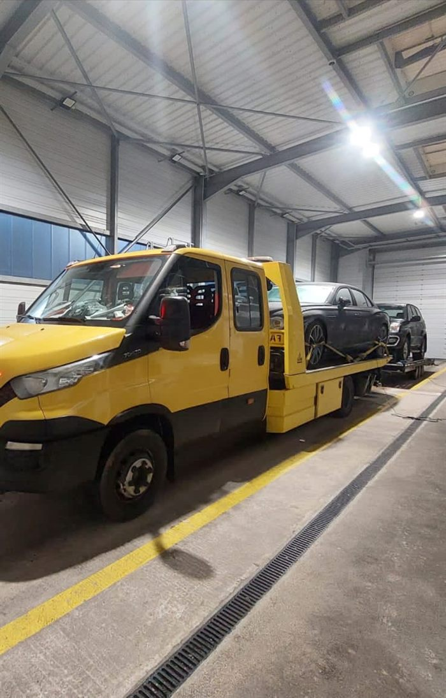

When your car, van or 4x4 breaks down and can't be driven safely, we recover it — from wherever you are in Birmingham or the West Midlands to wherever you need it to go.
Breaking down is stressful enough without having to work out who to call or what to say. Breakdown recovery means collecting your vehicle from wherever it's stopped — a driveway, a car park, a side street or the roadside — and taking it to a destination of your choice, whether that's home, a garage or a dealership. You don't need to diagnose the problem yourself; just tell us what's happening and where you are, and we'll take it from there.
We cover Birmingham city and the surrounding West Midlands area. If you've broken down anywhere from the city centre to Solihull, Edgbaston, Erdington, West Bromwich or further out, get in touch and we'll talk through what's needed.
When you might need breakdown recovery
Breakdowns rarely happen at a convenient moment, and they come in a lot of different forms. Recovery is the right call when:
Your vehicle won't start at all.
There's been a mechanical failure — a belt, gearbox or engine fault, for example.
The battery is flat and the vehicle won't hold a jump start.
You have a puncture and no usable spare, or it isn't safe to change a wheel where you've stopped.
The engine is overheating and continuing to drive would risk further damage.
You've run out of fuel, or suspect the wrong fuel's gone in.
There's an electrical fault — lights, dashboard or systems behaving oddly or cutting out.
A warning light has appeared alongside a loss of power or an unusual noise.
The vehicle has become immobilised after a fault and simply won't move.
The vehicle needs transporting rather than driven, even if it could technically still move.
We recover the vehicle — we don't carry out mechanical repairs. Where a fault turns out to be something quick, like a flat battery, our roadside assistance service may be able to get you moving again without a full recovery.
Not sure which you need?
Roadside Assistance or Vehicle Recovery?
The two services solve different problems, and it's not always obvious which applies until someone's had a look. Here's the general rule.
Roadside assistance
If your vehicle can potentially be made roadworthy again at the roadside — a flat battery that will take a jump start, a wheel change, or being let back into a locked vehicle — roadside assistance may get you moving again without a tow.
If the vehicle can't safely continue — a mechanical fault, no spare wheel, or damage that makes driving unsafe — it needs to be loaded or towed to a garage or another destination instead. That's breakdown recovery.
Not sure which applies to you? Just call or WhatsApp us and describe what's happened — we'll advise.
Simple process
How It Works
The same straightforward process whether you're in the city centre or out in the West Midlands.
01
Call or WhatsApp
Get in touch and describe what's happened to your vehicle.
02
Tell us your location and what happened
Your exact location, vehicle details, and whether it's safe to stay with the vehicle.
03
Recovery vehicle is dispatched
We work out what's needed and send a recovery vehicle to you.
04
Vehicle is recovered or transported
Loaded or towed safely and taken to your chosen destination.
Local coverage
Breakdown Recovery in Birmingham & West Midlands
Faster Breakdown Recovery is a mobile operation — recovery vehicles are dispatched directly to you rather than working from a fixed depot, so there's no public office or premises to visit. Wherever you've broken down in Birmingham or the surrounding area, the process is the same: call or WhatsApp us and we'll come to you.
Current coverage extends across Birmingham city and out into the West Midlands, including the main routes used to travel into and out of the city — the M6, the M5 and the A38(M) Aston Expressway. Each area below has its own page with genuinely useful local detail.
A good number of the breakdowns we're called to happen on Birmingham's busier routes — the M6 running through the heart of the conurbation via Spaghetti Junction, the M5 towards West Bromwich and Dudley, and the M42 arcing round towards Solihull and the airport. These roads carry fast-moving traffic, so safety comes before anything else.
1
Put your hazard lights on as soon as you realise there's a problem, so other drivers can see you.
2
If you can, move the vehicle onto the hard shoulder, a layby or well onto the verge, clear of moving traffic.
3
Get yourself and any passengers out of the vehicle and behind a barrier if it's safe to do so — don't stand between your car and passing traffic.
4
Call us with the most accurate location you can give — a junction number, mile marker or nearby landmark all help.
For road-specific detail, see our dedicated pages for the M6, M5 and M42.
Before you call
What To Do After a Breakdown
Wherever you've broken down — city street, car park or open road — the same basics apply. This is worth knowing even before you need it.
Put your hazard lights on straight away so other drivers and pedestrians can see there's a problem.
Move to a safe location if you can — off the road, onto a verge or into a car park, rather than staying in a live lane.
On a motorway or fast dual carriageway, get yourself and any passengers behind a barrier if it's safe to do so — see our M6 guidance below for more detail.
Stay well away from live traffic at all times, even when retrieving belongings from the vehicle.
When you call, give us the most accurate location you can — a postcode, junction number or nearby landmark.
Let us know if you have passengers with you, so we know who and what we're arranging for.
Tell us the vehicle's make and model and what condition it's in — whether it can move under its own power at all, for example.
Vehicles we recover
We recover cars of all makes and models, along with 4x4s, vans and other light commercial vehicles. Tell us what you're driving when you call so we can plan the recovery method that suits it — some vehicles, such as low-clearance cars or electric vehicles, need particular care when loading.
If you're specifically after van recovery or a wider look at what we cover across vehicle types, see our van recovery and vehicle recovery pages.

Cost
How Pricing Works
We don't publish a fixed price list, because breakdown recovery isn't a fixed-cost job — what you pay depends on things like your vehicle, your location, the distance involved, what the recovery actually requires, where the vehicle is being taken, and sometimes the time or circumstances of the callout. Call or WhatsApp us with the details and we'll talk through the likely cost with you before any work begins, so there are no surprises.
Can you recover a car that has broken down in Birmingham?
Yes. We cover Birmingham city and the surrounding West Midlands area — call us with your location and vehicle details and we'll dispatch a recovery vehicle to you.
Can you recover a vehicle from the M6?
Yes, we recover vehicles from the M6 and other main routes around Birmingham, including the M5 and the M42. If you break down on a fast road, prioritise getting yourself and any passengers somewhere safe before calling — see our M6 recovery page for road-specific guidance.
What information do you need when I call?
Your exact location (a postcode, junction number or nearby landmark all help), what's happened to the vehicle, the make and model, and where you'd like it taken. The more detail you can give, the faster we can plan the right recovery.
Can you recover a vehicle that cannot be driven?
Yes — that's the core of what breakdown recovery is for. If your vehicle can't be safely driven, we load or tow it to your chosen destination rather than attempting to drive it.
Can you recover vans and light commercial vehicles?
Yes, alongside cars we recover vans and light commercial vehicles. See our van recovery page for more detail on that service specifically.
How much does breakdown recovery cost?
It depends on your vehicle, location, distance and what the recovery involves, so we don't quote a fixed price upfront. Call or WhatsApp us with the details and we'll talk you through the cost before any work begins.
Can you recover a vehicle to another garage or location?
Yes. Tell us where you'd like the vehicle taken — home, your usual garage, a dealership or elsewhere — and we'll take it there as part of the recovery.
What should I do while I wait for recovery?
Put your hazard lights on, get yourself and any passengers somewhere safe and away from moving traffic, and keep your phone charged if possible so we can reach you. Stay somewhere visible but out of the path of traffic.
Can you help at night or at weekends?
Yes, we operate 24 hours a day, every day of the year, including nights, weekends and public holidays. See our 24 hour breakdown recovery page for more detail.
What's the difference between roadside assistance and vehicle recovery?
Roadside assistance covers problems that can potentially be fixed on the spot, like a flat battery or a wheel change. Vehicle recovery is for when the car can't safely continue and needs to be loaded or towed elsewhere. See our roadside assistance page for more on that distinction.